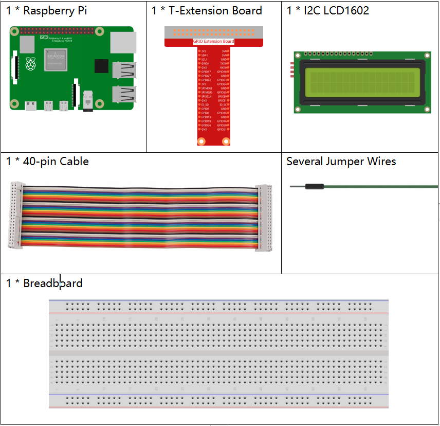

Note
Bonjour, bienvenue dans la communauté SunFounder dédiée aux passionnés de Raspberry Pi, Arduino et ESP32 sur Facebook ! Plongez plus profondément dans l’univers de Raspberry Pi, Arduino et ESP32 aux côtés d’autres passionnés.
Pourquoi nous rejoindre ?
Support d’experts : Résolvez les problèmes après-vente et les défis techniques grâce à l’aide de notre communauté et de notre équipe.
Apprendre et partager : Échangez des astuces et des tutoriels pour améliorer vos compétences.
Aperçus exclusifs : Bénéficiez d’un accès anticipé aux annonces de nouveaux produits.
Réductions spéciales : Profitez de réductions exclusives sur nos produits les plus récents.
Promotions et cadeaux festifs : Participez à des tirages au sort et à des offres promotionnelles pendant les fêtes.
👉 Prêt à explorer et créer avec nous ? Cliquez sur [Ici] et rejoignez-nous dès aujourd’hui !
1.1.7 Écran LCD1602 I2C
Introduction
Le LCD1602 est un écran à cristaux liquides de type caractère, capable d’afficher 32 caractères (16*2) simultanément.
Composants requis
Dans ce projet, nous aurons besoin des composants suivants.
Schéma de câblage
T-Board Name |
physical |
SDA1 |
Pin 3 |
SCL1 |
Pin 5 |

Procédures expérimentales
Étape 1 : Construisez le circuit.

Étape 2 : Configurez l’I2C (voir I2C Configuration. Si l’I2C est déjà configuré, passez cette étape.)
Étape 3 : Accédez au répertoire du code. .. raw:: html
<run></run>
cd ~/davinci-kit-for-raspberry-pi/python-pi5
Étape 4 : Exécutez. .. raw:: html
<run></run>
sudo python3 1.1.7_Lcd1602.py
Une fois le code exécuté, vous verrez le message Greetings!, From SunFounder s’afficher sur l’écran LCD.
Note
Si vous obtenez l’erreur
FileNotFoundError: [Errno 2] No such file or directory: '/dev/i2c-1', consultez la section I2C Configuration pour activer l’I2C.Si vous recevez l’erreur
ModuleNotFoundError: No module named 'smbus2', exécutez la commande suivante :sudo pip3 install smbus2.Si l’erreur
OSError: [Errno 121] Remote I/O errors’affiche, cela signifie que le module est mal câblé ou défectueux.Si le code et le câblage sont corrects, mais que l’écran LCD n’affiche toujours rien, ajustez le potentiomètre à l’arrière pour augmenter le contraste.
Avertissement
Si le message d’erreur RuntimeError: Cannot determine SOC peripheral base address apparaît, consultez Si gpiozero ne fonctionne pas..
Code
Note
Vous pouvez modifier/réinitialiser/copier/exécuter/arrêter le code ci-dessous. Mais avant cela, assurez-vous de vous rendre dans le répertoire source comme davinci-kit-for-raspberry-pi/python-pi5. Après modification du code, vous pouvez l’exécuter directement pour observer le résultat.
#!/usr/bin/env python3
import LCD1602 # Importation du module pour interfacer avec le LCD1602
import time # Importation du module pour les fonctions de temporisation
def setup():
# Initialiser le LCD avec l'adresse I2C 0x27 et activer le rétroéclairage
LCD1602.init(0x27, 1)
# Afficher le message 'Greetings!' en haut à gauche (ligne 0, colonne 0)
LCD1602.write(0, 0, 'Greetings!')
# Afficher le message 'From SunFounder' sur la deuxième ligne (ligne 1, colonne 1)
LCD1602.write(1, 1, 'From SunFounder')
time.sleep(2) # Afficher les messages pendant 2 secondes
try:
setup() # Exécuter la fonction de configuration pour initialiser le LCD et afficher les messages
except KeyboardInterrupt:
# Effacer l'affichage du LCD en cas d'interruption clavier (ex: Ctrl+C)
LCD1602.clear()
pass # Continuer sans autre action
Explication du Code
Ce fichier est un script open source pour contrôler l’écran LCD1602 via I2C, facilitant son utilisation.
import LCD1602 # Importation du module pour interfacer avec le LCD1602
La fonction initialise le système I2C avec l’adresse de l’appareil désignée. Le premier paramètre correspond à l’adresse de l’appareil I2C, détectable avec la commande i2cdetect (voir l’annexe pour plus de détails). L’adresse du LCD1602 est généralement 0x27.
# Initialiser le LCD avec l'adresse I2C 0x27 et activer le rétroéclairage LCD1602.init(0x27, 1)
LCD1602.writeest utilisé pour afficher des messages sur l’écran LCD. Les deux premiers paramètres indiquent la position de la ligne et de la colonne, le troisième est le message. Vous verrez maintenant s’afficher « Greetings! From SunFounder » sur l’écran LCD.# Afficher le message 'Greetings!' en haut à gauche (ligne 0, colonne 0) LCD1602.write(0, 0, 'Greetings!') # Afficher le message 'From SunFounder' sur la deuxième ligne (ligne 1, colonne 1) LCD1602.write(1, 1, 'From SunFounder')